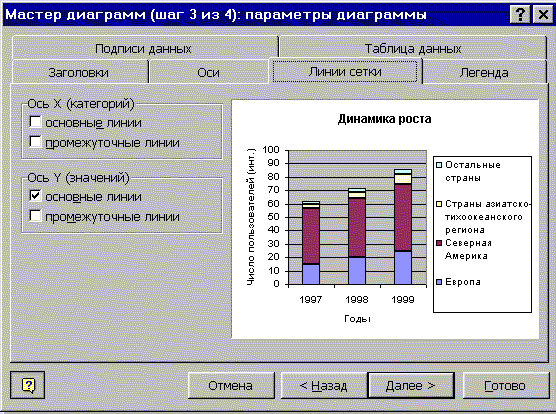
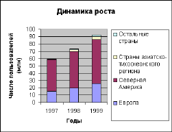

8. СОЗДАНИЕ ДИАГРАММЫ
Диаграммы Excel предназначены для графического
отображения числовой и текстовой информации. В
Excel можно создать либо внедренную диаграмму, либо
лист диаграмм.
- Выделите ячейки, содержащие данные, которые
должны быть отражены на диаграмме. Диапазон
ячеек не обязательно должен быть связным.
- Если необходимо, чтобы в диаграмме были
отражены и названия строк или столбцов, выделите
также содержащие их ячейки.
- Нажмите кнопку Мастер диаграмм
- Следуйте инструкциям мастера.
Рассмотрим следующий пример: пусть имеется
таблица, содержащая данные о росте числа
пользователей Интернет в мире по регионам (рис.
1.1).

Рис. 1.1
Построим по этим данным столбиковую диаграмму,
отражающую динамику роста числа пользователей.
- Выделим диапазон ячеек A2:D6. Ячейки B2:D2 содержат
заголовки столбцов, ячейки A3:A6 — заголовки строк.
- Нажмем кнопку Мастер диаграмм. На
экране появится диалоговое окно Мастера
диаграмм (Шаг 1). В поле "Тип" выберем пункт
"Гистограмма", в поле "Вид" —
"Гистограмма снакоплением" (вторая по
счету). Щелкнем на кнопке "Далее"

- В появившемся окне (Мастер диаграмм, шаг 2),
изображенном ниже, имеется две вкладки:
"Диапазон данных" и "Ряд".
С помощью вкладки "Диапазон данных" можно
уточнить (или определить, если он не был
определен в п.1 ) диапазон, в котором находятся
данные на рабочем листе Excel и указать способ их
представления - по строкам или по столбцам.

Вкладка "Ряд" позволяет настроить ряды
даных: можно удалить часть данных, указать
диапазон с подписями и т.д.

Выберем представление данных по строкам.
Для этого на вкладке "Диапазон
данных" установим флажок "Ряды в: строках".
Если выбрать представление данных по
столбцам, то получим диаграмму, отражающую
динамику роста числа пользователей,
сгруппированную по регионам.
В поле "Диапазон" уже указан диапазон ячеек,
содержащих нужные данные (для этого мы их и
выделяли в п. 1).
На вкладке "Ряд" ничего менять не
будем и щелкнем на кнопке "Далее".
- В появившемся диалоговом окне (Шаг 3 Мастера
диаграмм) имеется несколько вкладок, служащих
для оформления общего вида диаграммы .
Рассмотрим некоторые из них:
- Вкладка "Заголовки" позволяет
настроить заголовок всей диаграммы и подписи
осей.
В поле "Название диаграммы" мы внесли
надпись "Динамика роста", в поле "Ось Х"
— "Годы", в поле "Ось Y"— "Число
пользователей (инт.)"

- Вкладка "Линии сетки" служит для
настройки числа вида и числа вспомогательных
линий на диаграмме.

- Вкладка "Подписи данных" помогает
настроить подписи к данным на диаграмме.
На диаграмму можно вынести либо значения,
представленные столбцами (пункт "Значение"
в группе "Подписи значений"), либо их долю в
общей сумме, представленную данным столбцом
(пункт "Доля" в группе "Подписи
значений"). При активизации пункта
"Категория" на ось Х диаграммы переносятся
данные из "легенды" (саму легенду можно
настроить с помощбю соответствующей вкладки
этого же окна).

- В ниже изображенном окне нужно указать место
расположения диаграммы - на отдельном новом
рабочем листе или на том же листе, где находятся
исходные данные.
 Установим нужные
параметры и щелкнем на кнопке "Далее".
Установим нужные
параметры и щелкнем на кнопке "Далее".
Построенная нами диаграмма приведена ниже.
Таким же образом можно построить диаграмму
любого другого типа, доступного в Excel

Построенная диаграмма может быть изменена.
Если щелкнуть правой кнопкой мыши на любом из ее
элементов, откроется его контекстное меню.
Назад | Содержание | Вперед